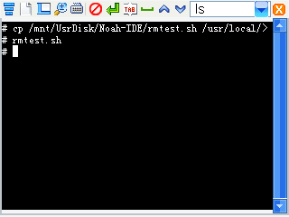

昊哥的NP1500私房菜
2012-02-08
第三讲 - shell脚本的编写运行 与 变量的使用
shell是一个命令解释器,它解释由用户输入的命令并且把它们送到内核.
不仅如此,shell有自己的编程语言,它允许用户编写由shell命令组成的程序.
shell脚本是解释型的,而不是编译型的.
什么是shell脚本呢?
简单的说shell脚本就是一个包含若干行shell或者Linux命令的文件,一个命令的组合文件,它指定了一系列命令运行和运行的顺序.
接下来,我们就来学习第一个shell脚本.
打开编程天地,或者在终端用vi:
#! /bin/sh
echo 'Hello World!'
exit
这就是一个shell脚本,这个脚本的作用是在屏幕上打印出Hello World!
这个脚本的作用和echo 'Hello World!'是一样的:
下面来详细地解释一下那个脚本.
看第一行,脚本必须以#!开头.
符号#!用来告诉系统它后面的参数是用来执行该文件的程序,在这个例子中我们使用/bin/sh来执行程序.
第二行的echo的作用是显示文字,也是主要程序段.
第三行的exit是退出.
接下来讲运行方法.
如果在fat分区,编辑完可以直接运行.
比如在内存卡有一个hello,就可以 /mnt/mmc/hello 这样直接运行:
但在系统分区是不能直接运行的.
比如,有一个文件:/tmp/a,如果直接运行,可能会显示:
这个就可以用昨天讲的chmod来给它加上可执行的权限:
chmod 777 /tmp/a
或也可以用 chmod +x /tmp/a
或者 sh /tmp/a

接下来 请zhiyb为大家讲几个例子.
假如,如果你想清除/test下的文件,就需要输入命令:
rm -rf /test/*
每次都要这么输入或许你会觉得很麻烦.
这个时候,你就可以做一个shell脚本方便你完成这个目标.
用上面讲的shell脚本的编写规则,首先新建一个文件,在第一行写上:
#! /bin/sh
然后写上你要执行的语句,在这里就是:
rm -rf /test/*
最后,加上exit退出即可.
在exit后面要留有一个空行,那样看起来比较好.
这样,每次你想执行清空/test下文件的时候,只要执行这个脚本即可.
你如果有sh文件关联的话,直接在资源管理器中运行即可:
如果你把它复制到PATH变量指定的路径(比如/usr/local/sbin)的话,想运行那个脚本就可以省略路径了:

Linux下写shell脚本还有一个注意事项:换行格式和Windows不同.
因此,你用记事本写的shell脚本在学习机中会无法运行的,在学习机中写的shell脚本在Windows上看也会出现换行问题.
问:对啊,学习机上的换行到电脑上怎么成了一个黑块了?
Windows的换行用的是CRLF,两个字节;学习机Linux系统用的是LF,只有一个字节,因此才会出现这个问题.
你可以安装一个高级的文本编辑器来打开你编写的脚本.
Windows上有很多支持Linux换行的软件,比如EditPlus/Notepad++/UltraEdit.
你可以安装了那些软件后用那些软件编辑.
我在Windows上用来编辑sh脚本的软件是Editplus,个人感觉不错.
Editplus3菜单栏->文档->文件换行格式(CR/LR)->更改文件换行格式
可以把文件换行格式改为Linux的:
因为Linux是由UNIX发展来的,所以Editplus在这里显示的是UNIX换行格式:
其它软件都有类似的功能,比如UltraEdit:
你也可以在机子上用dos2unix处理文件,然后chmod获取权限就可以执行了.
dos2unix命令是用来改变换行格式的,它可以把文件中的CRLF换行改为Linux的LF.
用法: dos2unix 文件位置
比如, dos2unix /mnt/UsrDisk/Noah-IDE/rmtest.sh
************************以下附送一些东西************************
下面让nyz1500来贡献个脚本,讲一下怎么把系统自检的程序改成返回桌面,大家欢迎!
有一个命令是qcop,它被用来管理系统,与系统qpe桌面环境进行通讯.
我把原来系统自检的程序改成了切换到桌面.
/opt/QtPalmtop/bin/qcop QPE/System "execute(QString)" qpe
是主要语句.
/opt/QtPalmtop/bin/qcop 是qcop程序的位置.
QPE/System qpe:系统环境主程序 system:系统.
"execute(QString)" execute:运行 QString:qpe的字符串 双引号是因为有空格所以才加的.
最后的qpe是要切换到的程序,桌面环境.
从那个语句可以写出脚本:
#! /bin/sh
/opt/QtPalmtop/bin/qcop QPE/System "execute(QString)" qpe
exit
写完脚本后,用cp命令复制到/opt/QtPalmtop/bin里,并改名为test,就可以了.
比如,你的文件在本地磁盘/Noah-IDE下,叫qpe.sh,那么
cp /mnt/UsrDisk/Noah-IDE/qpe.sh /opt/QtPalmtop/bin/test
就可以了:
注:可以用TAB自动补全功能,输入目录的时候方便得多.
上上下下左左右右+目录..成功!
************************本部分结束************************
接下来讲变量.
变量 顾名思义就是会变的量.
变量 是脚本编程中进行数据表现的办法.它们可以在算术计算中作为操作数,在一个字符串表达式中作为符号表达抽象的意义或是其它意义.
变量标识了内存中保存数据所用的位置.
变量的名字是它的值保存的地方,引用它的值称为变量替换(variable substitution),给变量一个值的过程叫做赋值.
变量赋值可以使用等于号(=),比如var1=27.
如果var1是一个变量的名字,那么$var1就是引用这个变量的值--即这个变量包含的数据.
注意$variable实际上只是${variable}的简单的简写形式.在某些场合使用$variable形式会引起错误,这时你可能就需要使用${variable}的形式了.
shell的赋值很简单,没有类型的区别,它不像C似的还分整形/浮点/指针变量.
#! /bin/sh
hello="Hello Bash"
echo "hello"
0
echo
echo "$hello"
echo
exit
上面是一个脚本,讲述了变量的基本用法.
那上面的四个echo是为了显示出变量的作用和变量引用的方法.
如果你运行着个脚本的话,你会发现实际的输出是:
hello
Hello Bash
问:为什么等号后面有引号,而你讲var1=27的时候27并没有引号啊?
等号后面有引号是因为引号中有空格,如果没有引号的话可能会出错.
而27中不包含空格等分割的字符,因此不需要引号.
问:变量的名字是它的值保存的地方,引用它的值称为变量替换(variable substitution),请详细解释一下.
变量的值保存在一段内存空间中,这段空间的名字是变量的名字.
比如,在这个脚本中,hello="Hello Bash".
运行脚本后,机器的内存中就会有一段空间存储着Hello Bash这几个字符,而这段空间就被命名为hello.
在脚本中可以用hello来代表Hello Bash这几个字符所在的空间.
用hello这个变量名引用Hello Bash这几个字符就叫做 变量替换,实际写出来就是${hello},或是简写$hello.
问:变量替换里面花括号和小括号能通用吗?
不能.{}和()的功能完全不同,{}一般用来做变量替换,
而()则有很多功能,比如,$()引用命令的输出,$(())是双括号,可以进行数学运算,这到以后再讲.
问:小机怎么打$?
在符号的第一行,第四个.就是那个美元的符号:
好了..今天就到这里了.下课!
起立!老师再见!